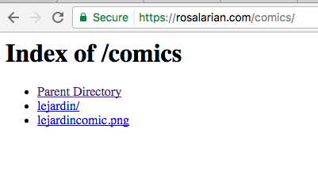

Hello and welcome. Here there be art.
You will find art that:
Here is a table representing the type of work that may be found here:
| Media | Traditional | Digital |
|---|---|---|
| Designs | X | |
| Comics | X | |
| Illustrations | X | X |
Enjoy!
On initial view I find that queer artist Rosalarian's website is solid. The navigation is clear, and the home page is laidout in a straightforward manner with her illustrations and her bio. When hovering over the navigation there are dropdown menus, which is neat. There is hoewever one flaw that I noticed right away. Being a fan of Rosalarian's comics, I clicked on the comics button on the navigation bar right away rather than selecting a specific comic, and I was led to this page:

What was otherwise a completely solid website has an uncomplete page; one loose end to a grand tapestry.